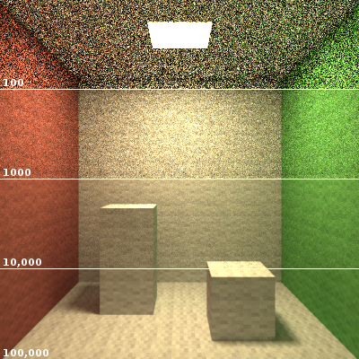
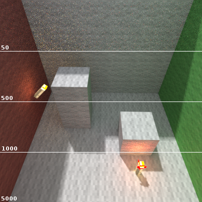
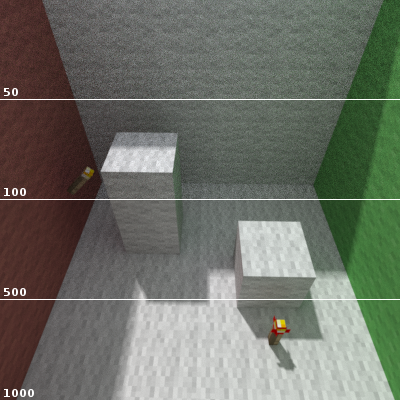

Search Documentation
Search Documentation
- About
 Gallery
Gallery- Getting Started
- User Interface
- Documentation
- Community
- Resources
Path Tracing
Path Tracing is a rendering algorithm similar to ray tracing in which rays are cast from a virtual camera and traced through a simulated scene. Path tracing uses random sampling to incrementally compute a final image. The random sampling process makes it possible to render some complex phenomena which are not handled in regular ray tracing, but it generally takes longer time to produce a high quality path traced image.
The random sampling in path tracing causes noise to appear in the rendered image. The noise is removed by letting the algorithm generate more samples, i.e. color values resulting from a single ray. A more in-depth explanation of the path tracing algorithm is given below.
Random Sampling
In path tracing rays are distributed randomly within each pixel in camera space and at each intersection with an object in the scene a new reflection ray, pointing in a random direction, is generated. After some number of bounces each ray eventually exits the scene or is absorbed. When a ray has finished boucing about in the scene a sample value is calculated based on the objects the ray bounced against. The sample value is added to the average for the source pixel.
The samples in a path-traced image are distributed evenly over all pixels. The color of each pixel is the average of all the sample values computed for that pixel.
The random components in path tracing cause the rendered image to appear noisy. The noise decreases over time as more and more samples are calculated.
Samples Per Pixel (SPP)
The defining factor for render quality is the number of samples per pixel (SPP).

The higher SPP you have in a rendered image the less noise will be noticeable. However the added quality per sample decreases the more samples you have already (since each sample is just contributing to an average over all samples). The difference in image quality between, for example, 20,000 SSP and 21,000 SSP will not be as noticeable as between 1,000 SSP and 2,000 SSP.
Sunlight does not require high SSP to give a nice image. Outdoor scenes can be rendered with relatively low SPP if sunlight is enabled. Emitters (torches, lava, glowstone, pumpkins, etc.) require a lot of SSP to reduce the noise, so indoor scenes and similar scenes in low-light environments take a much higher SPP number to look good.
Render Time
There is no definite answer to how long it will take to render a scene. The general guideline is that the longer you render an image, the better it will become. Take into account the diminishing returns explained above.
The time required to render a nice looking image depends on how well-lit the scene is, how many samples per second the renderer can produce (depending on how fast your CPU is), and how many pixels the canvas has.
Scaling the canvas has an effect on render time proportional to the pixel area of the canvas. An image of 800 by 800 pixels will take four times as long time to achieve the same quality as an image of 400 by 400 pixels since the total number of pixels has quadrupled. If your renders are taking too long, you can reduce the canvas size for quicker results.
More About Noise
Small but bright light sources, such as torches, add a lot of noise to a scene. It takes especially long time to render a scene lit mostly by a few torches. This is an unfortunate and unavoidable disadvantage of the Path Tracing rendering method.
The reason for this effect is based on the low probability for each sampled light path to include the torches, versus the high luminance of the object. The final render takes the average of all sampled values, but the average can be "too high" for a long time because of the high luminance. The average will decrease over time, but for a while there may be one pixel that has been lit by a particular light source in a neighborhood of several pixels that will stand out sharply against the others that have not yet been lit by the same source, hence the bright dots seen above at low sample counts.
SPP Comparisons
An indoor scene rendered with increasing SPP. The white numbers show SPP:


